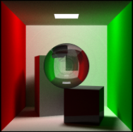

Marcel Santana

Address
Av. Jornalista Anibal Fernandes, s/n
Cidade Universitária (Campus Recife)
ZIP Code: 50740-560
Recife/PE - Brazil
Phone +55 81 2126-8430 ext. 4235
Fax +55 81 2126-8438
Contact
Email: mss8@cin.ufpe.br
Undergraduate student in Computer engineering at the Informatics Center of Federal University of Pernambuco (CIn - UFPE) and researcher at Voxar Labs under the supervision of Prof. Veronica Teichrieb. His research includes photo realistic rendering, image processing and machine learning. He is also interested in computer vision, signal processing, web development, embedded and high performace systems.
Interests
- Computer Graphics
- Machine Learning
- Computer Vision
- Signal Processing
- Web Development
- Embedded Systems
- High Performace Systems
Projects
LG Project
It is a confidential project developed in Voxar Labs from 2014 to 2015. In this project I was an undergraduate researcher.
Simplifique GP
It is a confidential project under development in Voxar Labs. In this project I am an undergraduate researcher.
PathTracer
This project was fully written in C++11 late 2015 to Graphics Computer course at CIn UFPE. It was my first implementation of a global ilumination algorithm. Nowadays I still studing global ilumination techiniques and trying to implement Photon Map.
PBRT Feature Extractor
In this project, supervisioned by an MSc student from Voxar Labs, I am implementing a feature extractor on PBRT rendering engine. The main objective is to address Monte Carlo noise problem using learned approaches.
OpenGL Scene Viewer
This project was fully written in modern OpenGL and C++11 late 2014 to Graphics Processing course at CIn UFPE. The main feature of this viewer is load and process OBJ files applying texture and Phong Ilumination to each one. The user also can change the position of each object and light in scene.
ZLeaks

This project was written in Python, C and Node.JS to Software and System Engineering course in 2016. It is an embbed system wich detects water leaks in pipes using learned approaches and notify the users on them smartphones. Also, this application is able to mensure and show the water waste by month. I implemented the server application which deals with several requisitions from hardware and treats them. I also helped to develop the system inteligence.
Teaching
-
Teaching Assistant - Linear Algebra for Computation
(March 2013 to November 2016) -
Teaching Assistant - Graphical Processing
(November 2014 to Still) -
Teaching Assistant - Signal and Systems
(November 2016 to Still)